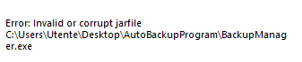
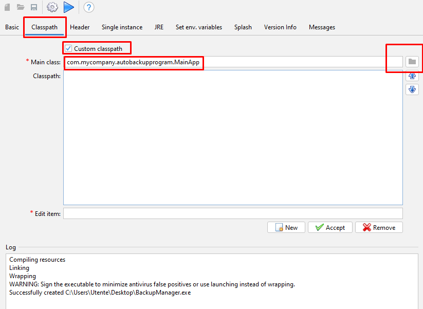

Il programma sarà stato firmato correttamente nel momento in cui, facendo tasto destro sul file, andando su proprietà, sarà comparsa la voce “firme digitali”.
Nota: Se si sta firmando un file .exe, scritto in java ed esportato da .jar a .exe usando launch4j, se si prova ad aprire l’eseguibile dopo la firma si otterrà probabilmente il seguente errore:

https://github.com/ebourg/jsign/issues/80
Per risolvere questo problema, occorre seguire i seguenti passaggi:
nella sezione “Classpath” di launch4j occorre selezionare il file .jar che si vuole esportare, il programma capirà in automatico la main class e in questo modo è possibile risolvere il problema
Dopo aver rigenerato il file .exe grazie a launch4j, sarà a questo punto possibile ri-firmarlo.